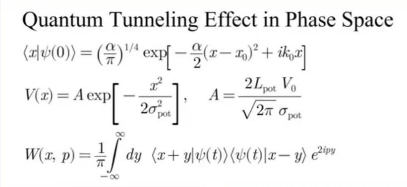

⚛️ 量子穿牆術 · 相空間解謎
用高中生的直覺，看懂量子隧穿 + 維格納函數
想像你是一顆小彈珠，眼前有一座很高的平滑山丘（位能障壁）。在古典世界，如果你滾得不夠快（能量低於山高），你永遠不可能翻過山頂，只會滾回來。但在量子世界，你同時是一團「雲」（波包），這團雲有機會直接「滲透」到山丘的另一側——這就是量子穿隧效應。以下我們用數學和圖像來理解它，連高中生都能掌握！
💡 貼心比喻：古典彈珠 vs 量子幽靈雲
・古典彈珠：能量不夠就真的過不去，像是撞到隱形牆。
・量子波包：像一團迷霧，一部份穿過山丘，一部份反彈回來，霧裡還有「干涉條紋」——那就是量子性格。

📦 步驟一：粒子的初始狀態 — 高斯波包
我們用一個數學上很漂亮、也很實際的波包來描述粒子。它叫做「高斯波包」，在位置空間的形狀像一座平滑的小丘，同時帶有平均動量。初始時刻 \( t=0 \) 的波函數為：
\[
\langle x | \psi(0) \rangle = \left( \frac{\alpha}{\pi} \right)^{1/4} \exp\left[ -\frac{\alpha}{2}(x - x_0)^2 + i k_0 x \right]
\]
符號的祕密：
- α (阿法)
- 控制波包的寬度（α越大波包越窄，位置越確定，但動量就越不確定）
- x₀
- 波包的中心位置（粒子大概在這裡）
- k₀
- 波數，和動量有關 (\( p = \hbar k_0 \)，但這裡我們用自然單位讓 \(\hbar=1\))，代表粒子平均向右動量
👉 這個波包可以想成「粒子最可能出現在 x₀ 附近，而且正以某個速度向右移動」。
⛰️ 步驟二：遇到的障礙 — 高斯位能壘
讓粒子穿隧的是一座平滑山丘（不是硬牆），數學上常寫成高斯函數：
\[
V(x) = A \exp\left[ -\frac{x^2}{2\sigma_{\text{pot}}^2} \right], \quad
A = \frac{2L_{\text{pot}} V_0}{\sqrt{2\pi}\,\sigma_{\text{pot}}}
\]
參數解讀：
- σ_pot
- 位能壘的寬度 (σ越小，山丘越瘦)
- V₀ , L_pot
- 一起決定山丘的有效高度，\(A\) 就是山頂的高度。\(L_{\text{pot}}\) 可視為一種特徵長度，讓A的式子保持整潔。
在古典眼裡，如果粒子的平均能量 (～\(k_0^2/2\)) 低於 \(A\)，粒子就過不去。但量子說：不一定！
🌌 步驟三：同時看位置與動量 — 相空間 & 維格納函數
量子世界有個麻煩：你不能同時知道粒子的精確位置和精確動量（測不準原理）。但是我們又很想把兩者畫在同一張圖上，觀察粒子在「相空間 (x, p)」的分佈。為此，物理學家維格納設計了一個神奇的函數：
\[
W(x, p) = \frac{1}{\pi} \int_{-\infty}^{\infty} dy \, \langle x + y | \psi(t) \rangle \langle \psi(t) | x - y \rangle \, e^{2ipy}
\]
這個 \(W(x,p)\) 可以看成量子態在相空間中的「偽機率密度」，它有幾個怪脾氣：
- ✅ 對 \(p\) 積分會得到位置機率密度 \(|\psi(x)|^2\)
- ✅ 對 \(x\) 積分會得到動量機率密度 \(|\phi(p)|^2\)
- ⚠️ 它可以變成負值！負值的地方代表純粹的量子干涉，古典機率絕不會有負的，所以它只是「準機率」。
透過維格納函數，我們能同時看到波包在哪裡 (x)，以及它有多少種速度 (p)。
🔮 穿隧過程中的相空間變化（圖像解說）
下圖是初始時刻 (\(t=0\)) 的「位置空間」：藍色是波包機率密度 \(|\psi|^2\)，紅色是位能壘 \(V(x)\)。你可以看到波包還在左邊 (\(x_0=-2\))，山丘在中心 (\(x=0\))。
初始波包 \(|\psi(x)|^2\) (α=1, x₀=-2)
高斯位能壘 \(V(x)\) (A=0.5, σ=1)
能量參考線 (低於山頂)
📊 古典觀點：波包能量 (約0.5) 低於山頂高度 (0.5) 時，仍可能發生穿隧。
當時間開始流動，波包向右撞擊位能壘，會發生什麼事？
- 一部份波包反射回來 — 向左跑去 (在相空間中出現在 \(x<0, p<0\) 區域)。
- 另一部份波包穿透山丘 — 繼續向右 (\(x>0, p>0\))，但強度變小。
- 干涉條紋 — 反射波和入射波在左邊重疊，造成維格納函數出現「負值區」，像棋盤一樣的圖案，這是量子疊加的指紋。
🌀 想像你在水槽中製造一道波浪，碰到一個淺區（位能壘），一部份波浪會反彈，一部份會繼續前進，兩者在重疊區形成複雜的水波花紋。維格納函數就是把這種「波紋」用位置與動量同時表示出來，負值區域就是那些干涉條紋。
🧩 維格納函數怎麼顯示穿隧？
下圖是概念性的相空間分佈（無法實際畫出精確數值，因為需要超級電腦模擬，但我們可以描繪主要特徵）：
⏳ 穿隧前 (t=0)
- 一個高斯丘在 \(x\approx -2\) ，\(p\approx +k_0\) (正動量)。
- 完全沒有負值，因為還沒開始干涉。
⏳ 穿隧中 (t>0)
- 兩大 lobe：反射部分 (\(x<0, p<0\)) 和穿透部分 (\(x>0, p>0\))。
- 在 \(x\approx0\) 附近出現負值的「皺褶」—量子干涉條紋。
- 穿透部分的總積分(機率) 就是穿隧機率。
這些負值區域無法用古典統計解釋，它們是波函數相位相干性的直接證明。科學家甚至用「維格納函數的負體積」來測量量子性有多強！
📐 重新看公式：每個符號都是故事
我們把三個主角公式擺在一起，並用口語重寫：
🧪 為什麼高中生要懂這些？
穿隧效應不是課本上無聊的數學：
- ⚡ 掃描穿隧顯微鏡 (STM) 利用穿隧電流看到原子，沒有它就不會有奈米科技。
- ☀️ 太陽內部的核融合靠穿隧才能發生，不然我們沒有陽光。
- 💻 未來的量子元件、量子位元也常常用穿隧來控制。
而維格納函數更是量子電腦、量子光學的診斷工具——科學家用它來「拍照」量子態的模樣。下次你聽到「量子干涉」、「負機率」，就知道那是指維格納函數裡的魔法！
🔤 一句話符號備忘錄
\(x_0\) 初始位置
\(k_0\) 初始波數 (正比於動量)
\(\alpha\) 波包集中度
\(\sigma_{\text{pot}}\) 位能寬度
\(A\) 位能高度 (由 \(V_0, L_{\text{pot}}\) 組成)
\(W(x,p)\) 維格納函數